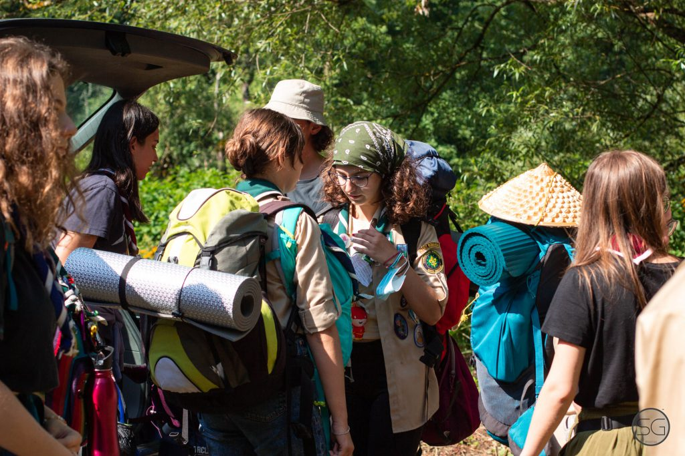

Primul meu camp

Prima mea întâlnire de la cercetași a avut loc pe 6 Martie 2021. Am fost „racolat” de niște prieteni, iar alegerea de a intra, for good, a fost probabil una dintre cele mai bune decizii pe care le-am făcut vreodată. Atunci mi-am început „călătoria” de inițiere în marea și frumoasa familie a cercetașilor. A urmat un hike și alte nenumărate programe, unde am început ușor ușor să înțeleg care-i faza cu cercetășia. Și mi-a plăcut… mi-a plăcut foarte tare.
4 luni mai târziu, mă așteaptă primul camp, sunt la gară, extrem de entuziasmat și gata să îmi demonstrez abilitățile cercetașești. Plecarea s-a făcut de la gară, seara, ceea ce a fost destul de cool. Am înfruntat oboseala jucând cărți și glumind, trecând destul de repede pe lângă nenumăratele localități mici care despart Bucureștiul de Reșița. Vine dimineața și în același timp se apropie și gara unde urmează să ne schimbăm trenul relativ modern pe un regional. Trenul nu oprește în stație decât un minut. Săritul din tren cu rucsacul de drumeție în spate rămâne una dintre cele mai favorite amintiri din camp.
Drumul cu regionalul, iar apoi cu autobuzul care a venit să ne ia de la gară au fost destul de scurte, și încărcate de nerăbdare. Oprirea în ultimul sat înainte de intrarea în rezervație a avut pentru mine, poate o valoare oarecum simbolică, întrucât am venit aspirant și am plecat cercetaș. Well, într-un fel, pentru că așa cum spune și Adi, cercetaș ești toată viața, iar posesia eșarfei nu este decât o părticică din „the whole thing”.
Rezervația a fost cu adevărat idilică, iar campul propriu-zis a fost (transformat și construit și cu ajutorul meu) unul dintre cele mai cool locuri în care am stat vreodată.
Campul, ca experiență a fost plin de evenimente și s-ar putea scrie pagini întregi despre toate cele întâmplate.
După un program de patrulă destul de uneventful, Adi, cu un aer foarte conspirativ, mă cheamă la el și îmi trimite rugăciunea, jurământul și codul cercetașului și mă îndeamnă să „contemplez asupra lor”. Zâmbesc și îl întreb dacă vrea să îmi dau promisiunea, iar el îmi zâmbește la fel de conspirativ și îmi spune că se mai gândește.
O zi mai târziu, Adi mă cheamă din nou la el și îmi spune că vrea să îmi arate ceva. Mă duc, deja intuind ceva, ne oprim în fața unui cort. Adi bagă mâna în cort și scoate o eșarfă și o cămașă și mi le oferă.
Ceea ce mi s-a părut cel mai cool, și overall cel mai memorabil a fost după-amiaza în sine, o seară de vară caldă, dar foarte înnorată. Urcarea dealului a avut o valoare aproape simbolică pentru mine, un fel de Golgotă, cel puțin ca atmosferă, cu ploaia torențială și tunetele care îți răsunau în piept. Ajuns în vârf, mă găsesc în fața unei grote, înconjurat de colegii cercetași și de lampioane de hârtie. Jurământul mi-a oferit o euforie extrem de greu de explicat în cuvinte.
Campul mi-a oferit câteva lecții pe care nu aș fi putut să le iau de nicăieri altundeva și rămân foarte bucuros la amintirea lui, fiind cu siguranță unul dintre lucrurile pe care le voi memora cu drag toată viața.
Gata oricând!